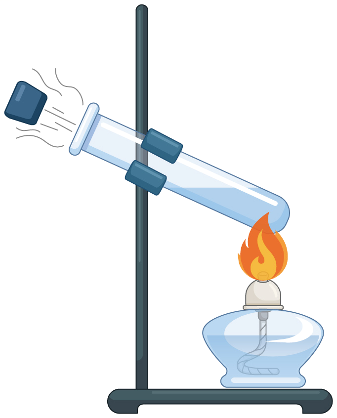

2023年北京中考物理 第6题 解析
6. 如图所示，在试管内装适量水，用橡胶塞塞住管口，将水加热一段时间后，橡胶塞被推出，管口出现大量“白气”。下列说法正确的是（ ）

A. 管口出现的“白气”是水蒸气
B. 水蒸气推出橡胶塞导致水蒸气内能增加
C. 水被加热的过程中，其内能是通过做功的方式改变的
D. 水蒸气推出橡胶塞的过程中，橡胶塞的动能是由水蒸气的内能转化来的
【答案】D
【解析】
【详解】A．管口出现的“白气”是水蒸气液化成的小水滴，故A错误；
BD．水蒸气推出橡胶塞，水蒸气的内能转化为橡胶塞的机械能，水蒸气内能减小，故B错误，D正确；
C．水被火焰加热的过程中，其内能是通过热传递的方式改变的，故C错误。
故选D。